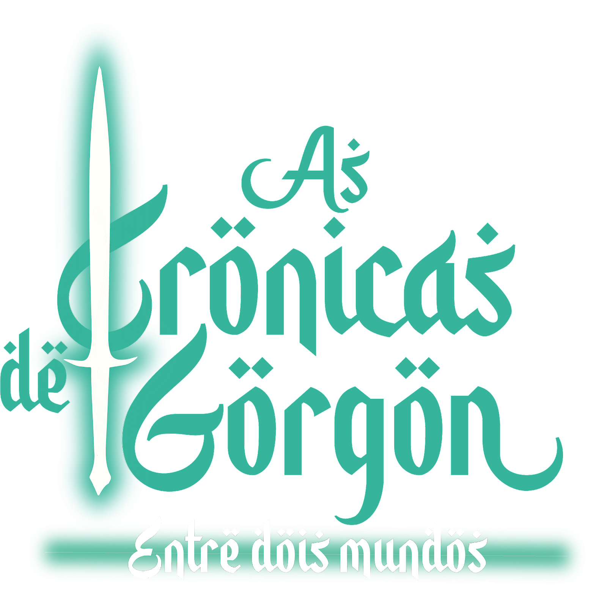

As Crônicas de Gorgon entre dois mundos Oficial Website
Conto by Ulysses Cezario Site by Tamer Serhan e Mateus Soares
HOME

Musica de ambientação:
INTRODUÇÃO
Trezentos e vinte e oito anos se passaram desde a batalha do Machado Leste.As terras de gorgon passam por
foram criadas cidades, rotas comerciais terrestres, marinhas e aérias. Infelizmente , mesmo com a tecnologia ter sido o
motivo da destruição do antigo mundo, muitos em Gorgun agora a veem como progresso. Porém , tantos avanços não
foram capazes de amenizar conflitos.
Finalmente a revolta da Flor Lunar está sendo contida. Kublai Khan e seus bárbaros vindos do Sul não conseguiram
derrubar a “O velho Grande Rei de Gorgon”...
Instruções para fazer sua ficha
Gorgon é um mundo fantástico com uma vasta e diversificada cultura,paisagens , fauna e flora .
Siga os passos a seguir e você irá criar um personagem incrível.
1° passo: LEIA O GUIA ! Você irá encontrar uma pequena introdução da história, descrições de classes e espécies.
2 º passo: Os jogadores poderão se aprofundar mais lendo os “contos dos heróis", uma pequena crônica que conta resumidamente os acontecimentos de Gorgon seus principais guerreiros históricos, heróis e vilões.
3° passo estude o mapa e o bestiário. Isso te ajudará a chegar de maneira mais segura aos seus objetivos.
A campanha terá o sistema de caminhos iniciais temáticos, no qual ditará a sua jornada , e irá dar base para criar seu background .
São seis caminhos iniciais temáticos, sendo que o primeiro está estabelecido como o principal.
Os caminhos não são obrigatórios.
Sistema de jogo:
sistema usado para jogar será o Sistema Gorgun, que consiste em ações com base em número aleatórios de dados somados a atributos.
Os atributos são :
Força;
Resistência;
Agilidade;
Percepção;
Precisão;
Carisma;
Inteligência;
Coragem;
Sopro.
Eles teriam grande impacto sobre suas ações, por isso o jogador terá de distribuir sabiamente seus pontos iniciais (9 pontos), pensando em nos modificadores positivos e negativos do seu personagem, vantagens cujo a espécie escolhida pelo jogador irá ter.
Força: ataques com espadas, teste físicos segurando objetos pesados, empurrar oponente, qualquer ação que alguém usaria força como combustível.
Resistência: Será considerado como atributo principal a defesa, contra venenos, estocadas e quedas, minimizando o dano.
*Obs: ao cair de lugares altos será acrescentado o valor da sua armadura como peso no dano.
Agilidade: Atributo que será considerado em ações que envolvem atletismo, combate corpo a corpo, esquiva, testes de equilíbrio e ataques com armas leves.
Percepção: Atributo que irá possibilitar o jogador ver atalhos, pontos fracos, trilhas, baús escondidos, etc.
Precisão: Atributo que irá possibilitar efetivar o acerto de um projeto no alvo ou de algum objeto lançado.
Inteligência: Atributo que possibilita o sucesso em ações associadas a conhecimentos. Decifrar línguas, abrir cofres, navegar, conhecimento em Fauna e flora, cultura, mapas etc.
Coragem: Atributo que possibilita o jogador aumentar o valor de sua iniciativa. Durante o jogo poderá haver momentos onde os jogadores terão de fazer um teste de coragem, quando enfrentarem inimigos de nível maior, ou criaturas ferozes.
Sopro: Atributo que representa o controle da energia Atem, rodeia Gorgon. Quanto mais sopro o jogador tiver, mais sensível ele é.
Ventura
são pontos que alteram o destino de sua ação. A cada ponto de ventura faz com que o jogador ganhe 20 pontos na rolagem. Para ganhá-los o jogador deve jogar , atuando de acordo com o seu propósito relacionado ao seu background descrito pelo seu criador
Os pontos de ventura tem limite. Ou seja, se seu valor de ventura chegar a zero, o jogador não poderá mais usá-lo.
Sistema de iniciativa: A cada batalha será jogado um dado de iniciativa. Personagens com pontos de coragem poderão acrescentar como modificadores A cada dois pontos de coragem , 1 de iniciativa.
Poderá ser contado o bônus de agilidade. Ao tomar um crítico o jogador, desce 3 jogadas de sua iniciativa .
Para montar um personagem, o jogador deverá escolher uma espécie e uma classe, que lhe dará pontos bônus e de árvores de habilidades.
Hitpoints:
A vida do personagem será medida pelos pontos base de cada espécie e pela soma da vitalidade: For [sem armamento] + Res[sem armadura].
Dano:
O dano dado será com base no atributo utilizando para ação + dano da arma.
Ex:
For 8 + Espada 1(d6) + bônus se houver = x Dano.
Defesa:
O valor da defesa será considerado o valor do atributo de resistência + mais o bônus da armadura.
Ex:
Res 7 + Escudo 1 + Armadura 7 + bônus se houver =
D20 no ataque:
Quando um jogador tirar 20 no dano ao atacar ele dará o dobro de dano.
D20 na defesa:
Quando o jogador tirar 20 ao Defender, ele tomará o dano mais poderá contra atacar.
Modo furtivo: O jogador só poderá entrar em modo furtivo quando o oponente não o viu. Será jogado um dado para dizer a efetividade: 1d6 para distância corpo a corpo, 1d10 , para médias, e 1d20 para longas . Caso dê certo o próximo ataque
poderá ser crítico.
Tentativa:
Se ele falhar, irá tomar um ataque sem chance de defesa, ou seja sem a subtração do seu atributo, o dano bruto e puro.
Armaduras:
As armaduras possuem três classes.
Leves: Possuem baixo modificador positivo e nenhum modificador negativo.
Médias: Possuem modificador positivo e baixo modificador negativo.
Pesadas: Possuem alto modificador positivo e alto modificador negativo.
Ex:
Sobretudo : + 1 agilidade, + 0 resistência.
Armadura couro com faixas de Noro (ferro): + 2 resistência, - 2 força.
Armadura da Guarda Albatroz: + 5 resistência, - 3 de força.
Armas:
Há uma gama de equipamentos em Gorgon, Armas longas, Espadas , machados , arcos, etc.
Armas cortantes e de impacto: será considerado o atributo de Força para ação e para dano.
Armas perfurantes: Arcos, bestas, lanças, boomerangs, dardos.
Será considerado Precisão para ação e força para dano.
Armas exóticas: Chicotes, correntes. Agilidade para ação e força para dano.
Ataque corpo a corpo: Agilidade para ação e força para dano.
Dano das armas:
Ataques de animais: 1d12 (pode variar. Animais médios 2d12; Animais Grande 3d12);
Ataques corpo a corpo: 1d6;
Armas curtas: 1d6;
flechas 2d6
Armas médias 3d6;
Armas longas. 4d6;
Armas exóticas 1d6+1d12
Armas de sopro: vlr Sopro + 2d6
Ataque de sopro: 4d6.
Itens:
Os jogadores poderão encontrar lojas e feiras nas cidades e contrabandistas no meio da estrada que vendem diversos itens:
Cada loja possui seu catálogo, não sendo o mesmo em outras cidades.
Kallogs
Tifacs
Cidars
O dinheiro é essencial em Gorgon.
Com ele os jogadores poderão comprar livros (cartas de perícias) itens, pontos de habilidades e recursos.
Cada classe possui um multiplicador.
Status
É a condição social do personagem, um multiplicador adicional.
Cada classe possui status disponíveis: